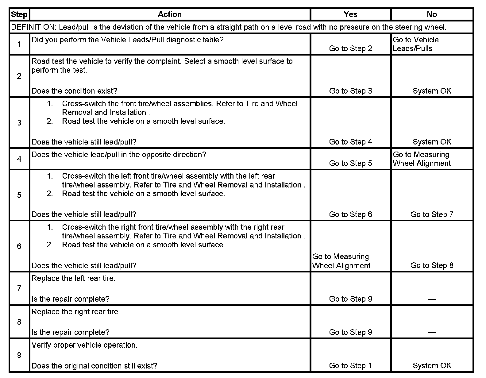

Operation CHARM
: Car repair manuals for everyone.
Home
>>
Cadillac
>>
2007
>>
Escalade ESV AWD V8-6.2L
>>
Repair and Diagnosis
>>
Maintenance
>>
Wheels and Tires
>>
Testing and Inspection
>>
Component Tests and General Diagnostics
>>
Radial Tire Lead/Pull Correction
Radial Tire Lead/Pull Correction
Radial Tire Lead/Pull Correction
Step 1 - Step 9:
